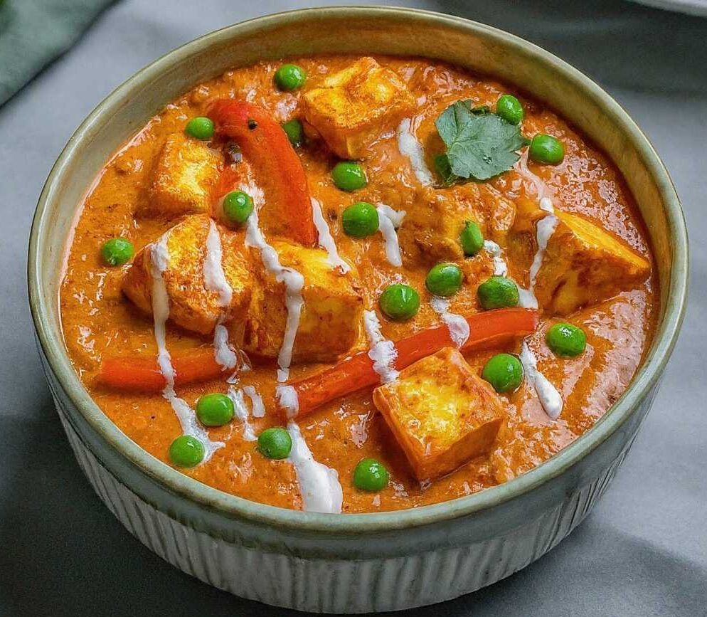

Home
Shahi Paneer

Description
Shahi Paneer is a rich and creamy North Indian dish made with paneer (Indian cottage cheese) cooked in a luscious tomato-based gravy enriched with cream, nuts, and aromatic spices. The term "Shahi" translates to "royal," reflecting the dish's luxurious ingredients and flavors. This dish is often enjoyed during special occasions and festivals, served with naan, roti, or rice.
Ingredients:
- 250 grams paneer (cubed)
- 2 large tomatoes (pureed)
- 1 large onion (finely chopped)
- 1/4 cup cashew nuts (soaked and ground to a paste)
- 1/4 cup fresh cream
- 2 tablespoons ghee or oil
- 1 teaspoon ginger-garlic paste
- 1/2 teaspoon turmeric powder
- 1 teaspoon red chili powder
- 1 teaspoon garam masala
- 1/2 teaspoon cumin seeds
- Salt to taste
- Fresh coriander leaves (for garnish)
Steps:
- Heat ghee or oil in a pan over medium heat. Add cumin seeds and let them splutter.
- Add finely chopped onions and sauté until they turn golden brown.
- Add ginger-garlic paste and cook for another minute until the raw smell disappears.
- Add turmeric powder, red chili powder, and salt. Mix well.
- Add the pureed tomatoes and cook until the oil starts to separate from the masala.
- Add the cashew nut paste and mix well. Cook for 2-3 minutes.
- Add fresh cream and stir to combine. Let it simmer for 5 minutes on low heat.
- Add the cubed paneer and gently mix to coat the paneer with the gravy. Cook for another 5 minutes.
- Sprinkle garam masala and give it a final stir.
- Garnish with fresh coriander leaves and serve hot with naan, roti, or rice.